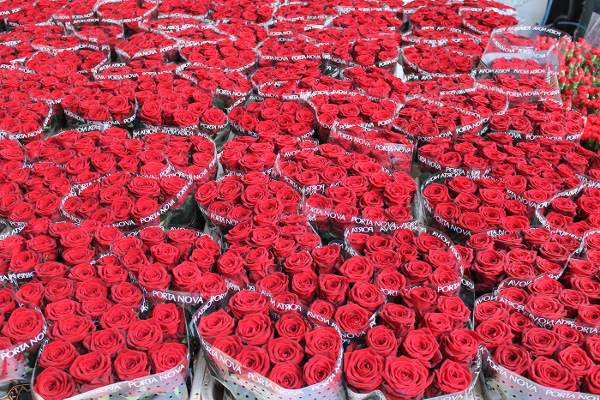

Цвет алых губ сказочных красавиц был списан с бархатных лепестков обольстительной розы Red Naomi® (Ред Наоми® ). Слегка обугленный край лепестков делает очертания розы ярко выраженными и контрастными
Чайно-гибридная роза Red Naomi® один из любимых сортов темно-красных роз, её гранатно-вишневые бархатистые лепестки аккуратно уложены в плотный, бокаловидный цветок. Распускаясь, роза не теряет аккуратности и смотрится незабываемо на любой стадии.
Бутон темно-вишневый, с черными краями. Цветки бокаловидные, темно-красные, густо-махровые, 55 - 75 лепестков, с приятным сладким ароматом, в роспуске достигают 13 см. Чаще одиночные, редко до 3 штук в кистях.
Кусты среднего размера (для юга - 100-130см). Побеги слабо-колючие. Листья темно-зеленые, матовые.
Устойчивость к болезням средняя, морозостойкость средняя.
Очень урожайный тепличный сорт, при недостатке света, как и большинство красных роз, имеет склонность темнеть. Из достоинств - приятный аромат, что достаточно редко встречается у срезочных роз.
Несмотря на мнение, что запах сокращает розе жизнь в букете, срезка этого сорта достаточно долго сохраняет свежесть, 10-14 дней. Еще один немаловажный плюс: в летний(жаркий) период не мельчают бутоны.
© 2016, Все права защищены